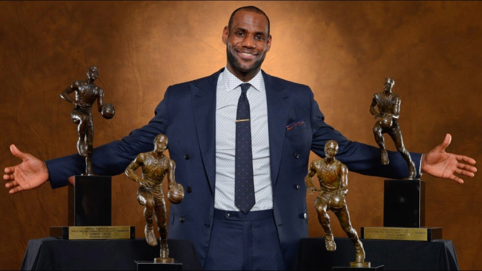
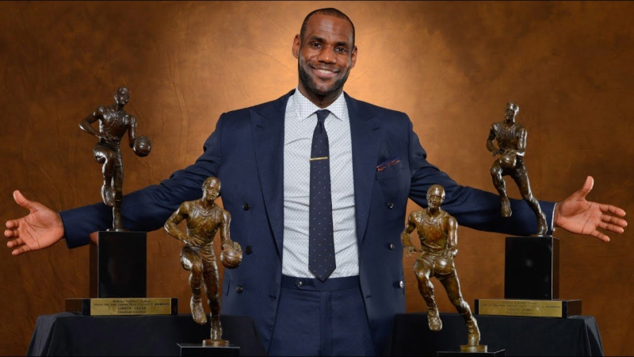

Lebron James is the greatest basketball player of all time due to his unmatched all around game that no player has ever achieved. He can score as good as the best scorers, He can pass as well as the best passers, and he can defend as well as the greatest defenders. Lebron has also been dominant for almost two decades, which shows his unmatched consistency and longevity that no NBA player has ever achieved. Lebron's ability to elevate his teammates and make almost every player to play along with him a better player is an unmatched trait that not many players have done.
Lebron's achievements also establish the fact he is the greatest basketball player ever. He has won 4 titles for 3 different teams, being the best player on each team, which has never been done. He has won 4 MVP awards, is the all tine leading scorer and is a 21 time All Star. Beyond stats, his impact on and off the court is unmatched. He has been a leader in social justice movements and has used his platform to bring awareness to important issues. His ability to be a role model on and off the court seperates him from other great players that kept their impact only on the court.
 

| Player | PPG | RPG | APG |
|---|---|---|---|
| Lebron James | 26.9 | 7.5 | 7.4 |
| Michael Jordan | 30.1 | 6.2 | 5.3 |
| Kareem Abdul-Jabbar | 24.6 | 11.2 | 3.6 |
| Kobe Bryant | 25.0 | 5.2 | 4.7 |